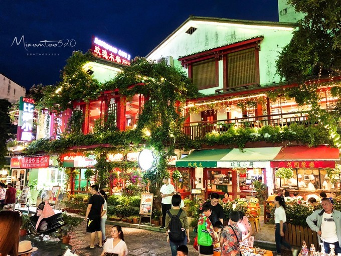

Добро пожаловать в туристическую сеть Гуйлиня~
Добро пожаловать в туристическую сеть Гуйлиня~
издатель:malomtooвремя：2020-09-17
Вступая в сезон дождей в конце мая, уровень воды в реке Лицзян поднимется, течение воды быстрое и мутное, что не способствует тому, чтобы увидеть отражение, но температура в это время невысокая, прохладнее, когда она дожди, и вы можете попробовать туманный сон реки Лицзян с туманным дождем; сезон дождей заканчивается в июле и августе, поверхность реки чистая, но температура в это время высока, и это также золотой сезон для туризма , и много туристов. Поэтому, если вы боитесь жары, для поездки рекомендуется выбирать май или сентябрь.
Yangshuo 1Q84 - это курортный отель, спрятанный в лесу. Внутренняя обстановка выполнена в минималистском стиле без потери стиля. Он спрятан между горами и реками Яншо. Ночью вы можете наблюдать за звездами и светлячками. Днем вы можете можно смотреть на горы и воды.Прогуливаясь, наслаждайтесь прохладной ночью, он подходит для уединения в горах, чтобы расслабиться, а также подходит для случайного отдыха, чтобы разделить летнее ночное время с друзьями и семьей, лежа в большой комнате с видом, во сне, слушая сверчков и разные звуки природы, и лежать, и лелеять.
После непродолжительной прогулки меня затащил в магазин ушной сборщик на улице и вырвал мне уши. После этого мы вернулись в B & B. Поскольку мы не хотели слишком уставать в первый день, мы решили вернуться в другой день, чтобы хорошенько прогуляться.
Вкусный 10-летний интернет-магазин кукурузного сока знаменитости, перед магазином есть множество маринованных овощей и фруктов, кислых, пряных, сладких и вкусных. Каждый должен попробовать. Прямо напротив магазина Master Beer Fish Head.
После обеда я отправился прямо в отель, чтобы отдохнуть, позвонил в Didi Express в 2:30 дня и взял такси за 18 юаней до рабочего городка авиакомпании Yangshuo Lufthansa, на пересечении Shanshui Avenue и Lansheng Road. Здесь можно полетать на воздушном шаре и полетать на параплане. Это также один из самых ожидаемых в этой поездке. Также рекомендуется носить яркую одежду, чтобы фотографии выглядели лучше.